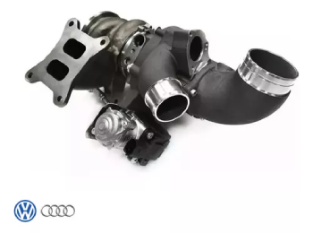
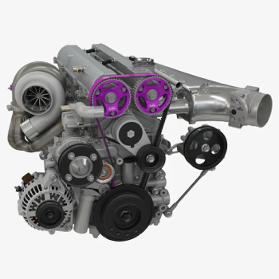
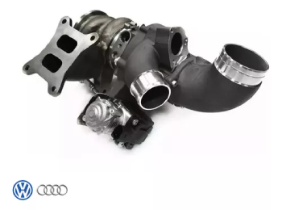
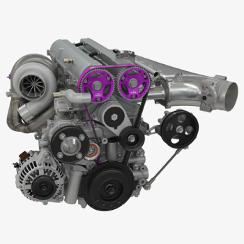

Productos Descatados

Las modificaciones de buena gama en los autos de drift
son esenciales porque mejoran el control,el rendimiento y la seguridad. Estas modificaciones incluyen ajustes en la suspensión, motores más potentes, equilibrio del chasis, medidas de seguridad, durabilidad y neumáticos adecuados. Permiten a los conductores mantener un control óptimo mientras realizan maniobras de derrape, lo que es crucial en esta disciplina de alto rendimiento.
| N° | Marca | País de origen | Descripción |
|---|---|---|---|
| 1 | MOMO | Italia | Fabricante de accesorios para automóviles, con un enfoque en volantes, asientos y accesorios de alto rendimiento. También es conocida por sus ruedas y llantas de alta calidad. |
| 2 | SPARCO | Italia | Especializada en la fabricación de equipamiento para deportes de motor, incluyendo asientos, arneses, ropa y accesorios de competición. SPARCO es una marca de renombre en la industria automotriz y de carreras. |
| 3 | NOS | Estados Unidos | Unidos Fabricante de sistemas de inyección de óxido nitroso (NOS) utilizados para aumentar temporalmente la potencia de los motores. NOS se ha convertido en un nombre reconocido en la industria de alto rendimiento. |
| 4 | BBS | Alemania | Famosa por la fabricación de ruedas de aleación de alta calidad utilizadas en automóviles de alto rendimiento y competición. Las ruedas BBS son conocidas por su diseño y rendimiento excepcionales. |
| Descripción e info de cada una. | |||
 


